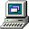
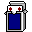
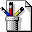
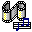

What's New - Check Email - Yahoo! Pager
Artes y Humanidades
Literatura, Fotografía, Museos...
Informática e Internet
Software, Hardware, Juegos, WWW...
Educación
Universidades, Escuelas K-12...
Noticias y Medios
Titulares mundiales, Periódicos, Clima...
Entretenimiento
Cine, Música de los 90, Humor...
Ciencia y Tecnología
Astronomía, Física, Exploración espacial...
| De | Asunto | Fecha |
|---|---|---|
| Bill Gates | Bienvenido a Windows 98 SE | 25/06/1998 |
| ICQ Alert | Tu amigo 1048291 se ha conectado | 14/07/1998 |
| Microsoft Network | Preparación ante el Efecto 2000 (Y2K) | 01/08/1998 |
Escriba el nombre del programa, carpeta, documento o recurso de Internet que desea que Windows abra:
¿Qué desea que haga el equipo?
(O presione el botón de abajo para reiniciar)